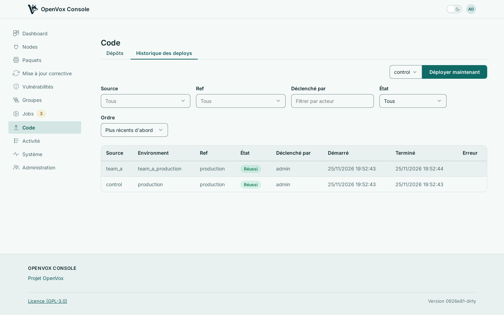

Utiliser
Déployer du code
Déployez du code Puppet depuis un ou plusieurs dépôts de contrôle vers les Environments à partir desquels openvoxserver compile.
La console déploie du code Puppet depuis des dépôts de contrôle - un Puppetfile et des manifestes dans git - vers le répertoire des Environments que lit openvoxserver, à l'aide de g10k. Chaque branche d'un dépôt de contrôle devient un Environment.
Consulter les déploiements nécessite code:read ; en lancer un nécessite code:deploy.
Activer le déploiement de code
Le déploiement de code reste désactivé tant que la console ne sait pas où se trouve g10k, quoi déployer et où le placer :
| Paramètre | Ce que c'est |
|---|---|
CONSOLE_G10K_BIN_PATH |
le programme g10k. L'image de conteneur de la console l'inclut et définit déjà ce paramètre |
CONSOLE_CONTROL_REPO_URL |
un dépôt de contrôle unique depuis lequel déployer |
CONSOLE_CODE_SOURCES_PATH |
ou, à la place, un fichier en déclarant plusieurs (voir ci-dessous) |
CONSOLE_CODE_DIR_PATH |
le répertoire dans lequel openvoxserver lit son code ; la console déploie dans son répertoire environments |
CONSOLE_CODE_WEBHOOK_SECRET |
le secret avec lequel sont signés les webhooks de l'hébergeur git |
CONSOLE_CONTROL_REPO_URL et CONSOLE_CODE_SOURCES_PATH ne peuvent pas être définis tous les deux : la console refuse de démarrer plutôt que de les combiner.
La console et openvoxserver doivent partager ce répertoire. Avec des paquets sur un seul hôte, pointez CONSOLE_CODE_DIR_PATH vers /etc/puppetlabs/code et autorisez l'utilisateur de la console à écrire dans son répertoire environments.
Avec la pile de conteneurs
Le fichier compose de production ne transmet aucun de ces paramètres à la console et ne lui donne pas le volume de code d'openvoxserver. Ajoutez les deux dans un compose.code.yml placé à côté :
services:
console:
environment:
CONSOLE_CONTROL_REPO_URL: ${CONSOLE_CONTROL_REPO_URL:?set the control repository}
CONSOLE_CODE_DIR_PATH: /etc/puppetlabs/code
CONSOLE_CODE_WEBHOOK_SECRET_FILE: /run/secrets/code_webhook_secret
volumes:
- openvoxserver-code:/etc/puppetlabs/code
secrets:
- code_webhook_secret
secrets:
code_webhook_secret:
file: ./secrets/code_webhook_secret
Passez-le ensuite après le fichier principal dans chaque commande :
docker compose -f docker-compose.yml -f compose.code.yml up -d console
Cette combinaison n'a pas encore été parcourue de bout en bout comme l'ont été les guides d'installation. Si un déploiement réussit mais qu'openvoxserver ne voit pas le code, vérifiez que les deux conteneurs présentent les mêmes fichiers sous /etc/puppetlabs/code/environments.
Déployer depuis plusieurs dépôts de contrôle
Pour déployer depuis plusieurs dépôts, déclarez-les dans un fichier YAML et pointez CONSOLE_CODE_SOURCES_PATH vers ce fichier :
sources:
control:
remote: git@github.com:org/control-repo.git
prefix: false # branch production -> environment production
team_a:
remote: git@github.com:org/team-a-control.git
prefix: true # branch production -> environment team_a_production
private_key: /etc/openvox-console/keys/team_a
webhook_secret_file: /etc/openvox-console/team_a_webhook
- Le nom d'une source ne peut contenir que des lettres minuscules, des chiffres et
_, car il entre dans les noms d'Environment. prefixdétermine les noms d'Environment produits par les branches d'une source :trueles préfixe du nom de la source,falseou l'absence de valeur les laisse tels quels, et une chaîne sert de préfixe. Deux sources ne peuvent pas aboutir au même préfixe, donc une seule au plus peut être sans préfixe ; sinon, la console refuse de démarrer.- Chaque source peut avoir sa propre clé de déploiement et son propre secret de webhook.
Une nouvelle source préfixée se déploie avec succès et ne change rien tant que des Nodes ne sont pas classifiés dans ses nouveaux noms d'Environment. Rien n'y déplace les Nodes à votre place.
Déployer
Ouvrez Code. L'onglet Dépôts liste chaque dépôt avec ses Environments et son dernier déploiement ; Deploy sur un dépôt déploie sa branche production. Déployer maintenant, dans l'onglet Historique des deploys, fait de même pour le dépôt par défaut.
Les déploiements d'un même Environment ne se chevauchent jamais, quel que soit le nombre d'instances de la console en marche. Chacun apparaît dans l'historique des déploiements, avec la personne qui l'a lancé, ainsi que sur la page Activité.


Déployer à chaque push
Pour déployer à chaque push d'une branche, ajoutez un webhook au dépôt sur votre hébergeur git :
- URL :
https://console.example.com/api/v1/code-deploys/webhookou, pour une source parmi plusieurs,https://console.example.com/api/v1/code-deploys/webhook/<source name> - Content type : JSON
- Secret : le secret du webhook pour cette source
- Events : pushes
La console vérifie la signature de chaque livraison (l'en-tête X-Hub-Signature-256) à l'aide du secret, et déploie la branche poussée.
Lire l'onglet Dépôts
Chaque dépôt affiche deux nombres de Nodes, et c'est l'écart entre eux qui est utile :
- Assignés : les Nodes que la classification dirige vers l'un des Environments du dépôt.
- Rapportant : les Nodes dont la dernière exécution Puppet a utilisé l'un d'eux.
Des Nodes assignés sans aucun rapportant signifient du code déployé qu'aucun Node n'a encore exécuté. Des Nodes rapportant sans aucun assigné signifient des Nodes qui exécutent du code vers lequel aucun groupe ne les dirige - généralement un Environment laissé par une source supprimée, ou un Node dont le propre puppet.conf définit un environment.
Taille désigne la taille des fichiers déployés, et non l'occupation disque : g10k partage les modules entre Environments, si bien que les tailles des dépôts se recoupent.
Retirer une source de la configuration met fin à ses déploiements, mais laisse ses Environments sur le disque, où openvoxserver continue de compiler à partir d'eux. Supprimez-les vous-même si c'est ce que vous vouliez.